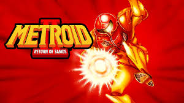
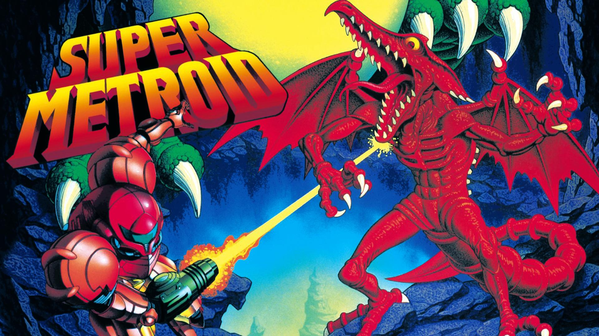
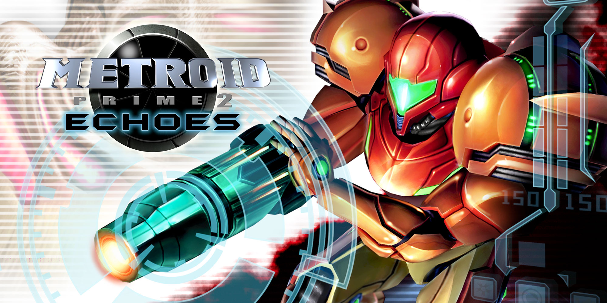
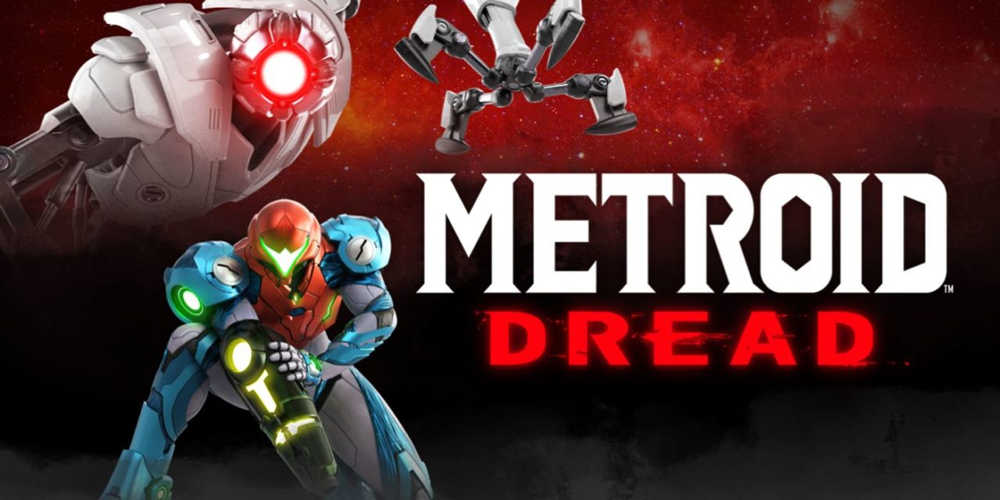
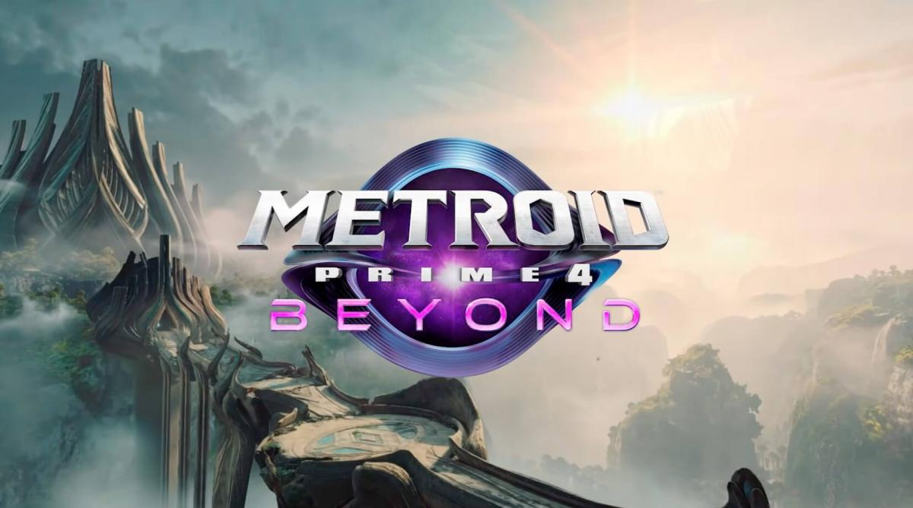

Metroid (1986)

La cazarrecompensas Samus Aran es enviada al planeta Zebes para destruir los organismos Metroid que han sido capturados por los Piratas Espaciales, liderados por Mother Brain. El juego estableció el universo de Metroid y la fórmula fundamental de exploración no lineal, adquisición de mejoras (como el Morph Ball y el Ice Beam) y la sensación de soledad, que es central para el género "Metroidvania".
Metroid II: Return of Samus (1991)
Samus es enviada a la tierra natal de los Metroid, el planeta SR388, con la misión de erradicar a toda la especie. El juego presentó el concepto de la evolución de los Metroid (de larva a Queen Metroid) y obligaba a Samus a destruir un número específico de criaturas para desbloquear nuevas áreas con terremotos. Fue el primer juego de la saga con un mapa más compacto y una atmósfera opresiva en blanco y negro.
Super Metroid (1994)
Considerado una obra maestra, Samus regresa a Zebes para recuperar la última larva Metroid robada por el Pirata Espacial Ridley. Este título perfeccionó la exploración no lineal y las mecánicas del juego, introduciendo el icónico Screw Attack y el Speed Booster. Destaca por su detallado diseño de niveles, su increíble atmósfera y por ser la cúspide del género 2D clásico de la franquicia.
Metroid Fusion (2002)

Tras ser infectada por un parásito X en SR388, Samus es curada con ADN de Metroid, lo que la deja vulnerable. En la estación espacial B.S.L., debe enfrentarse al Parásito X que ha clonado a Samus, conocido como SA-X. El juego se caracteriza por una narrativa más lineal, un enfoque en el sigilo y el horror de supervivencia, y un diálogo interno más profundo de Samus.
Metroid Prime (2002)

El primer juego de la serie en 3D, Samus investiga las actividades de los Piratas Espaciales en el planeta Tallon IV. Utilizando una perspectiva en primera persona, revolucionó la exploración al combinar el combate inmersivo con puzles ambientales y el escaneo de información para la historia, creando un género que fue aclamado como "First Person Adventure" (Aventura en Primera Persona).
Metroid Prime 2: Echoes (2004)
Samus viaja al planeta Aether, que existe en dos dimensiones paralelas: Luz y Oscuridad. Debe restaurar el equilibrio de energía de los Templos del planeta y enfrentarse a su oscuro doppelgänger, Dark Samus. La mecánica central gira en torno al cambio entre las dimensiones y la gestión de la energía vital en el ambiente hostil del Dark Aether.
Metroid Dread (2021)
Samus es enviada al planeta ZDR para investigar el origen de los Parásitos X, pero se encuentra atrapada y perseguida por los E.M.M.I., robots invulnerables. El juego regresa a las raíces de acción y exploración 2D, enfatizando una sensación de terror y persecución. Introduce el Phantom Cloak y el Slide Dash, y se considera la conclusión de la historia de los Metroid.
Metroid Prime 4: Beyond (2025)
El próximo título principal de la saga Prime continuará la exploración en primera persona de Samus. Aunque los detalles de la trama son limitados, se espera que retome la estética y las mecánicas de la trilogía Prime original (escaneo, combate basado en el visor y puzles en 3D), llevando a Samus a una nueva aventura galáctica que promete expandir la narrativa de la serie.